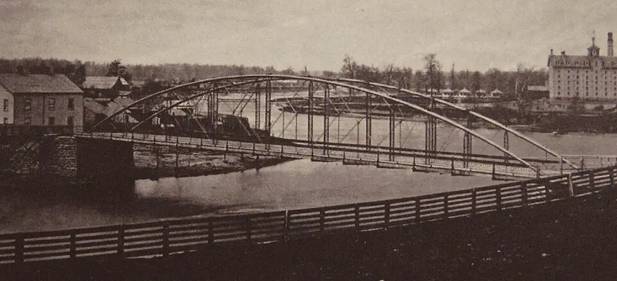
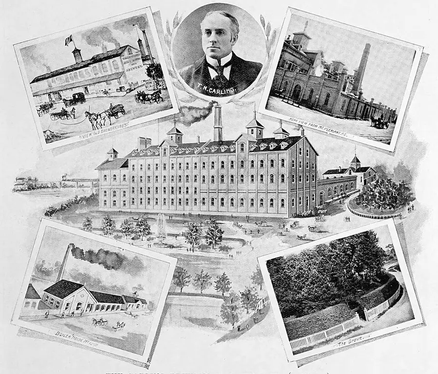
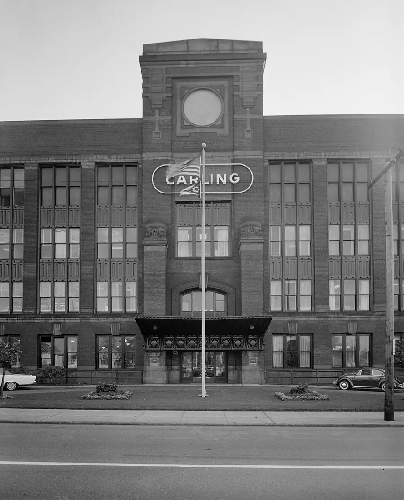

칼링 Carling
칼링(Carling)은 1840년 토머스 칼링이 캐나다 런던에 설립한 양조업체에서 비롯된 맥주 브랜드이다. 영국에서 칼링 라거로 널리 알려졌으며 몰슨 쿠어스의 자회사이다.
최종 업데이트
칼링은 어떤 브랜드인가
칼링은 캐나다에서 출발해 영국으로 판매를 넓힌 맥주 브랜드이다. 칼링 라거는 1952년 처음으로 영국에서 판매되었고, 1980년대 초반에는 판매량 기준 영국에서 가장 인기 있는 맥주 브랜드가 되었다.
소유 회사는 캐나다 브루어리즈, 칼링 오키프, 몰슨 브루어리와의 합병을 거쳐 몰슨 쿠어스로 이어졌다. 몰슨 쿠어스는 지금도 캐나다 전역에서 칼링 블랙 라벨을 양조하고 판매한다.
축구 리그와 대회, 음악 축제 후원에도 나섰으며, 2022–23 시즌 현재 남자 및 여자 FA컵 두 대회의 스폰서이다. 한편 영국 국세청과 도수 표기를 두고 세금 재판을 치른 사례도 있다.
칼링은 어떻게 시작되고 성장했나
칼링의 기원은 1818년으로 거슬러 올라가며, 영국 요크셔 출신 농부 토머스 칼링과 그의 가족이 어퍼캐나다에 정착해 에일 맥주를 양조한 데서 비롯된다. 1840년 칼링은 런던에서 작은 양조장을 시작해 지역 군부대 병사들에게 맥주를 판매했다.
1878년 아들 존과 윌리엄이 5층 규모의 양조장을 지었으나 1879년 2월 13일 화재로 전소되었다. 1930년 온타리오 브루잉 코퍼레이션과 합병했고, 이 회사는 1937년 캐나다 브루어리즈가 되어 여러 양조장을 인수하며 칼링을 전국 브랜드로 성장시켰다.
1952년에는 캐나다 브루어리즈와 영국 양조업자들의 합작을 통해 영국 시장에 진출했다.
칼링의 브랜드 아이덴티티는 무엇인가
캐나다 온타리오주 런던의 양조장에서 출발해 영국에서 판매량 기준 가장 인기 있는 맥주 브랜드가 된 라거 브랜드이며, 축구와 음악 후원으로 알려져 있다.
칼링의 대표 제품과 서비스는 무엇인가
대표 제품은 칼링 라거로, 1952년 영국에서 처음 판매되었고 1980년대 초반에는 판매량 기준 영국에서 가장 인기 있는 맥주 브랜드가 되었다. 캐나다에서는 몰슨 쿠어스가 지금도 전역에서 칼링 블랙 라벨을 양조하고 판매한다.
칼링 레드 캡은 1960년대 온타리오에서 가장 인기 있는 맥주 브랜드가 되었으나 이후 시장에서 사라졌고, 1994년 부활을 시도했으나 실패했다. 캐나다 브루어리즈는 인수한 양조장 다수를 칼링과 오키프 맥주를 양조하는 곳으로 전환했다.
칼링은 라거의 알코올 도수를 4%로 광고하지만 실제 양조 시 도수는 3.7%에서 4.3% 사이였다고 몰슨 쿠어스 측은 밝혔다.
칼링은 지금 어떤 상태인가
칼링은 몰슨 쿠어스의 자회사이다. 2017년 영국 국세청(HMRC)은 칼링이 2012년 9월 1일부터 2015년 1월 31일 사이에 5천만 파운드 이상의 세금을 덜 납부했다며 재판에 회부했으나, 회사는 실제 도수가 4% 과세 기준에 해당하지 않는다고 주장해 승소했다.
2022–23 시즌 현재 남자 및 여자 FA컵 두 대회의 스폰서로 후원하고 있다.
사진으로 보는 칼링의 역사



자주 묻는 질문
칼링는 어느 나라 브랜드인가요?
칼링는 캐나다의 식음료 브랜드입니다.
칼링의 브랜드 아이덴티티는 무엇인가요?
캐나다
칼링의 대표 제품은 무엇인가요?
대표 제품은 칼링 라거로, 1952년 영국에서 처음 판매되었고 1980년대 초반에는 판매량 기준 영국에서 가장 인기 있는 맥주 브랜드가 되었다.
칼링는 현재 어떤 상태인가요?
칼링은 몰슨 쿠어스의 자회사이다.
칼링의 본사는 어디에 있나요?
칼링의 본사는 버튼어폰트렌트에 있습니다(위키데이터 기준).
출처와 검증
칼링 관련 참고: 위키데이터 Q1041750 · 한국어 위키백과 · 영어 위키백과. 브랜드명은 한글과 원어를 함께 표기하되 데이터에 없는 표기는 만들지 않습니다. 기원 국가·설립연도는 검수된 정의문에서 확인된 값을 우선하고, 없을 때만 공식 웹사이트 URL이 일치하는 위키데이터 개체의 값을 씁니다. 위키데이터 값은 2026-11-08 기준입니다.